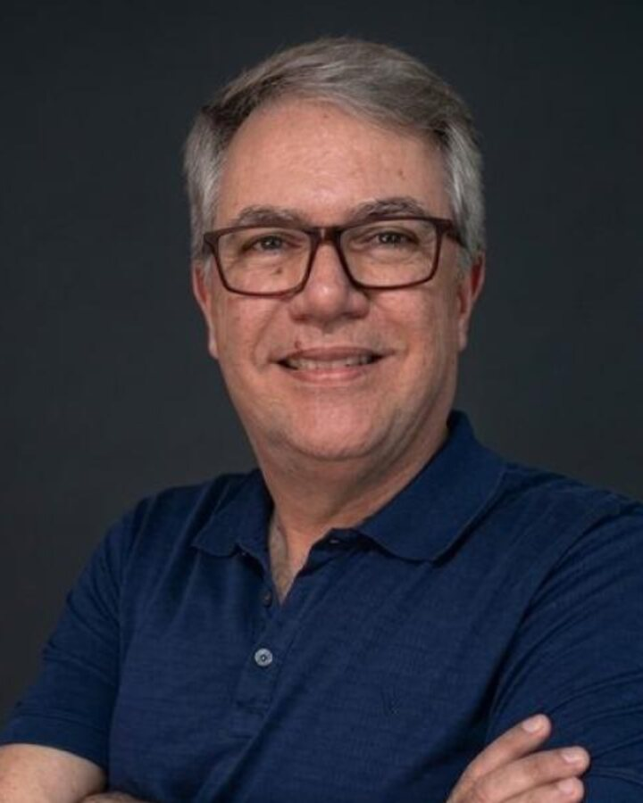

Sócio · Direção científica
Prof. Dr. Alexandre de Sene Pinto
Engenheiro Agrônomo · Entomologia Agrícola
- Mestre em Entomologia Agrícola pela FCAV/Unesp (1995) e Doutor em Entomologia pela ESALQ/USP (1999).
- Professor do Centro Universitário Moura Lacerda e professor convidado da ESALQ/USP.
- Consultoria técnica em cerca de 90 usinas de cana-de-açúcar na América Latina.
- Autor principal do estudo publicado na BioAssay 21 (2026) — a base científica citada na seção de evidência deste site.
- Palestrante no 1º Summit Sphenophorus, Ribeirão Preto · 18 de setembro de 2026.